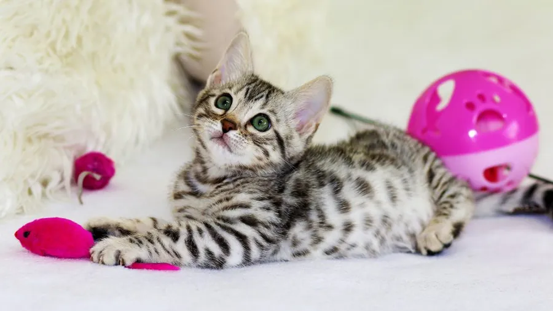

Péče o kočku: krmení, zdraví, srst a hračky
Praktické tipy pro nové i zkušené chovatele: jak kočku krmit, jak se starat o srst a drápky a jaké hračky jsou bezpečné.

Než si kočku pořídíte
- Kočka, nebo kocour? Kastrovaná zvířata jsou klidnější a kastrace předchází značkování močí i nechtěným koťatům.
- Krátká, nebo dlouhá srst? Dlouhosrsté kočky jsou krásné, ale potřebují pravidelné česání.
- Kotě, nebo dospělá kočka? Kotě potřebuje víc času a trpělivosti. Dospělá kočka má hotovou povahu.
Krmení
- Kočka je masožravec. Základem má být kvalitní krmivo pro kočky s vysokým podílem masa, psí krmivo jí nestačí.
- Nedávejte jí kosti, mohou se rozštípnout a poranit ji.
- Krmivo měňte postupně během 7–10 dnů, náhlá změna může rozhodit trávení.
- Čerstvá voda musí být k dispozici pořád. Mnoho koček pije raději z fontánky nebo širší misky.
- Když kočka okusuje trávu, je to v pořádku. Nabídněte jí kočičí trávu v květináči.
Zdraví
Najděte si veterináře, ke kterému budete chodit pravidelně. Očkování, odčervení a ochranu proti blechám řešte podle jeho doporučení. Přípravky „od oka“ a hlavně přípravky pro psy mohou kočce ublížit.
Srst, drápky a uši
- Česáním odstraníte odumřelé chlupy a omezíte chuchvalce v žaludku. U dlouhé srsti denně, u krátké stačí jednou týdně.
- Zacuchané chomáče rozplétejte prsty, ne hřebenem.
- Drápky stříhejte jen průhlednou špičku, speciálními kleštičkami pro kočky.
- Uši kontrolujte a čistěte jen viditelnou část, nikdy ne hluboko do zvukovodu.
- Koupání kočka většinou nepotřebuje. Když už, tak šamponem pro kočky a ve dvou.
Hračky a bezpečí
Hračky střídejte, kočky se rychle nudí. Nejlepší je hra s udičkou, při které si zaskáče. Škrabadlo by mělo být vysoké a stabilní. Provázky, gumičky a nitě po bytě nenechávejte, při spolknutí jsou nebezpečné. Papírová krabice zabaví na hodiny, igelitová taška je riziko.
Čistá toaleta
Kočka je čistotná a špinavou toaletu odmítne. Hrudky vybírejte každý den, toaletu mějte na klidném místě a stelivo doplňujte do výšky asi 7,5 cm. Nová kočka v domácnosti? Seznamujte zvířata postupně a každé dejte vlastní misku i toaletu.